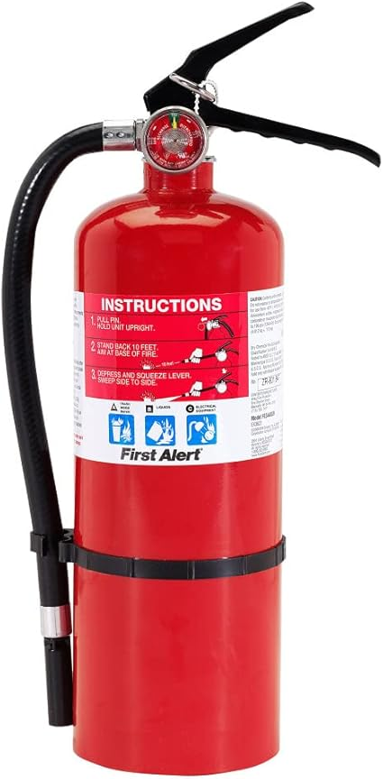

← kitchenfireextinguisher.com
Finding the Best Kitchenfireextinguisher Without Overpaying
May 2026
Buying kitchenfireextinguisher online can feel risky. Mixed reviews, confusing specs, and every brand claiming to be "the best." Here's what actually matters.
Lessons from Real Buyers
- Trusting fake reviews — Look for reviews with photos and specific details. Generic praise is often planted.
- Overbuying features — Most people use 20% of high-end kitchenfireextinguisher features. Don't pay for what you'll never touch.
- Going with the cheapest option — Budget kitchenfireextinguisher cut corners. Spending 20% more often gets something that lasts 3x longer.
Pro Tips
- Amazon's return policy removes most of the risk when buying kitchenfireextinguisher you haven't seen in person.
- Set price alerts on your top picks. kitchenfireextinguisher prices can drop 30-40% without warning.
- The Q&A section on kitchenfireextinguisher listings often answers questions that no review covers.
What We'd Actually Buy

→ #2 — ABC Fire Extinguisher for Home Vehicle Compact Grease Kitchen Car — Editor's pick
→ #1 — ABC Fire Extinguisher for Home Vehicle Portable Dry Chemical Fire Extinguis — Highly reviewed
→ #5 — 4 Pack Dry Chemical Fire Extinguisher with Mounting Bracket Portable ABC — Consistently rated
→ #4 — Ougist ABC Fire Extinguisher for Home Vehicle 2.5 lb 1-A:10-B:C Dry Chemica — Editor's pick

→ #3 — Small Fire Extinguisher for Home Car 6Pack 1.32lb Each Portable Dry Chemica — Editor's pick
Where Things Stand
The kitchenfireextinguisher space keeps improving, and 2026 is a solid time to buy. See our full rankings at kitchenfireextinguisher.com for side-by-side comparisons.
Affiliate Disclosure: As an Amazon Associate, we earn from qualifying purchases. This doesn't affect our recommendations.